2D Large Format Machining
Documentation on learning how to use the FBR-Versatil2500-11
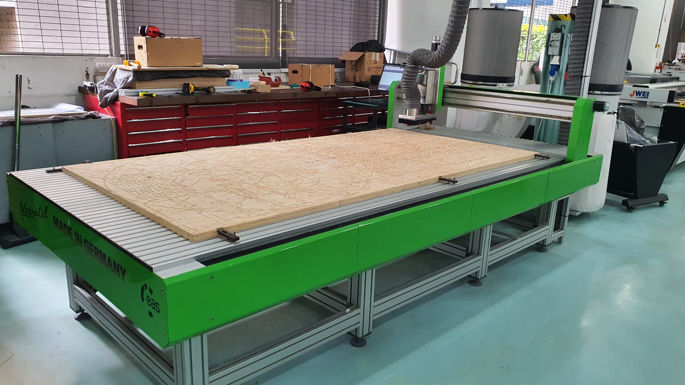Coaster
| Firstly i selected the pylwood of the correct thickness.Then i place it on the corner of the cutting bed and secure it using screws. The screws are placed on the edge of the plywood to avoid the cutter colliding onto it during the milling process. | 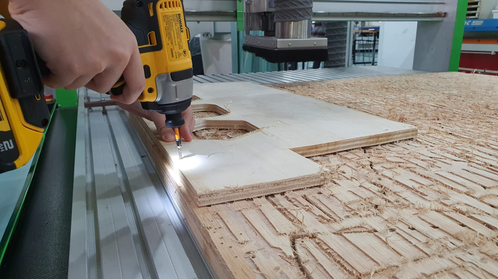 |
| The tool i will be using is a 6mm diameter flat end mill. | 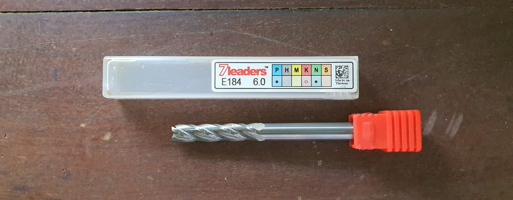 |
| Next, the tool is secured onto the spindle. | 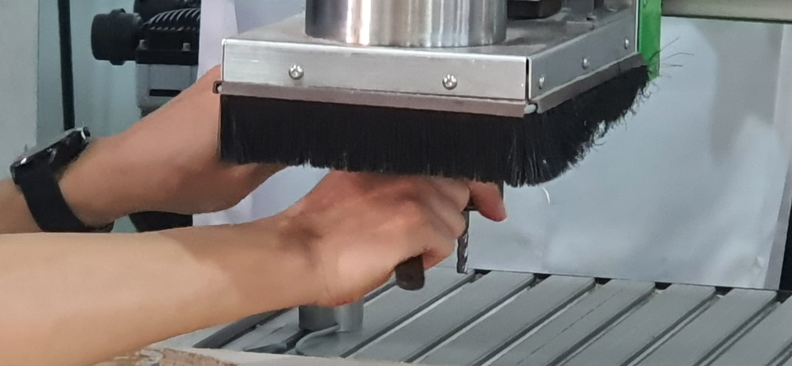 |
| During the cutting process, safety googles and ear protection is required to be worn. | 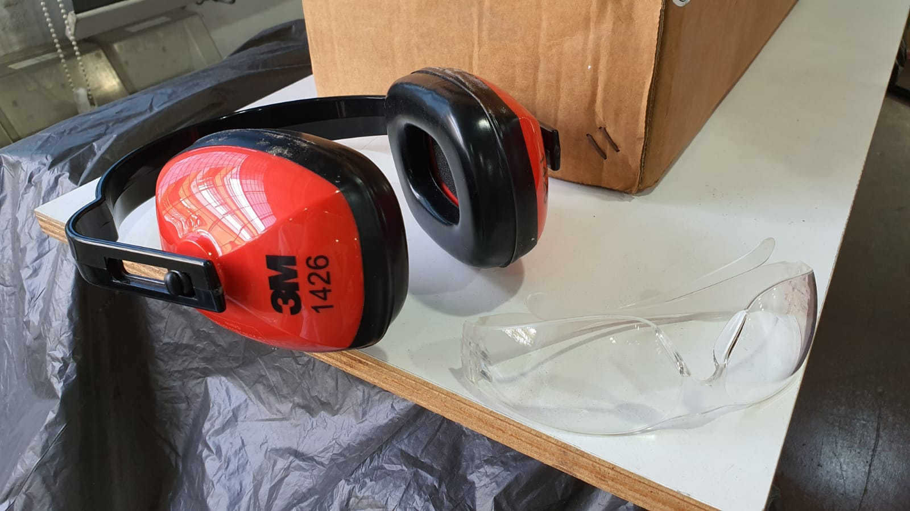 |
| -Set the job size according to the size and thickness of the ply-wood. -Import dxf file into VCarve Pro and check the lines. -Select Pocket cut and select the 6mm end mill tool (plunge depth = tool diameter) -Select Profile cut, set the cut depth, and add tabs -Simulate the toolpaths, and save the file as gcode mm type. -Open the gcode file, set the zero point for X, Y and Z and run the program. |
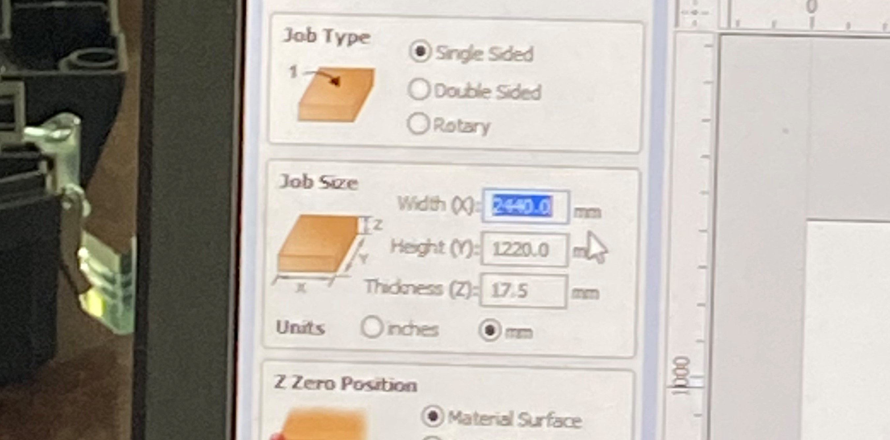 |
| 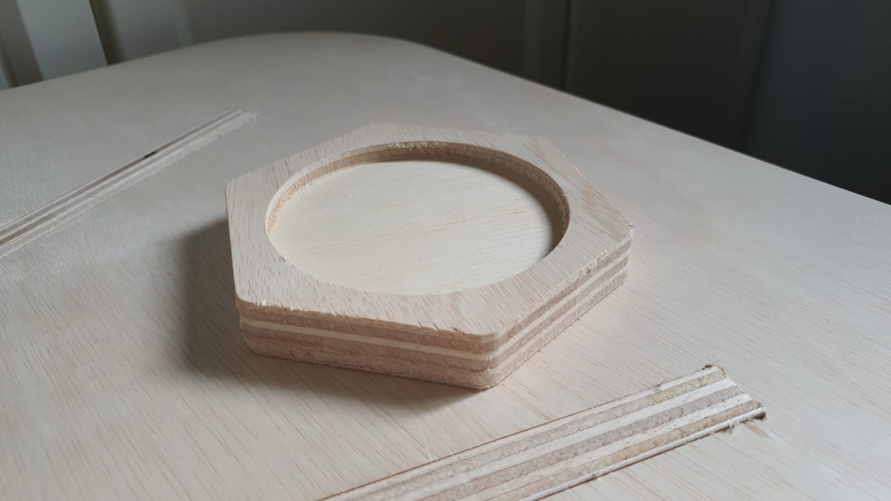 |
Flat Pack Furniture
| Firstly i create a sketch of the table top and extruded it. I then cut out 4 rectangles for the table legs. I created another sketch for the table leg and extruded it. Using the mirror function, i created copies of it for the other sides. Next, using an offset plane, i draw out the bottom shelf of the table and extruded it. |  |
| Since the cutting tools are round the CNC router is unable to cut out sharp corners, but we can over come it by using dog bone fillets | 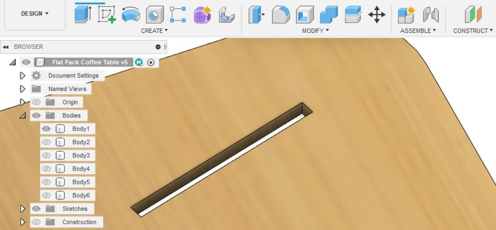 |
| To create a dog bone fillets, i downloaded the Dogbone add-ins from Github, this makes it easier as i do not need to create the fillets manually. | 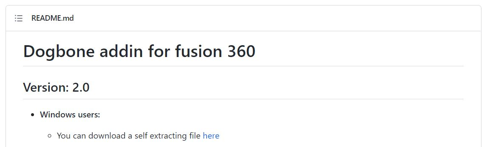 |
End Product
| 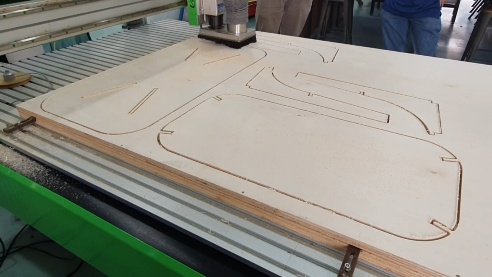 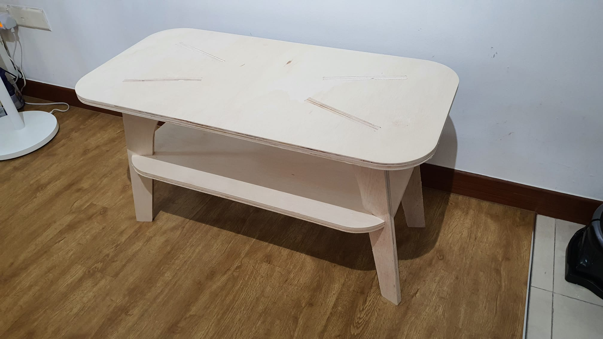 |
| 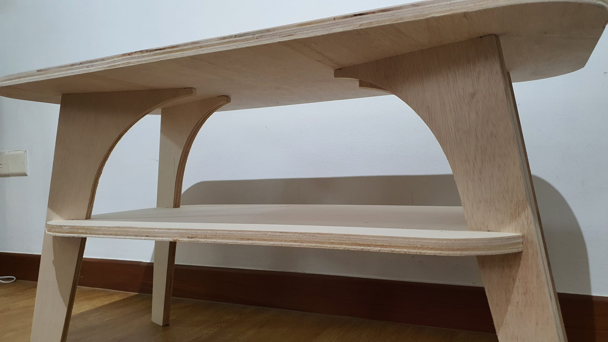 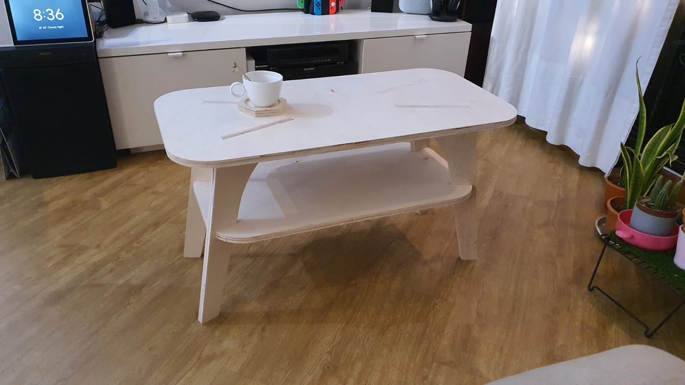 |